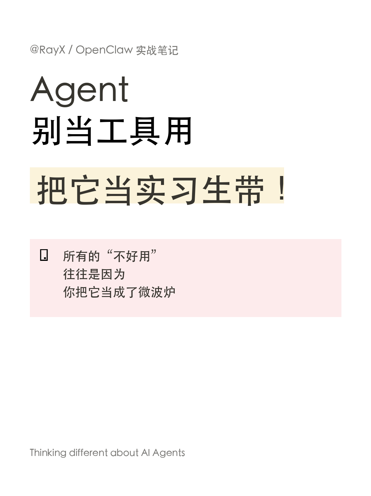
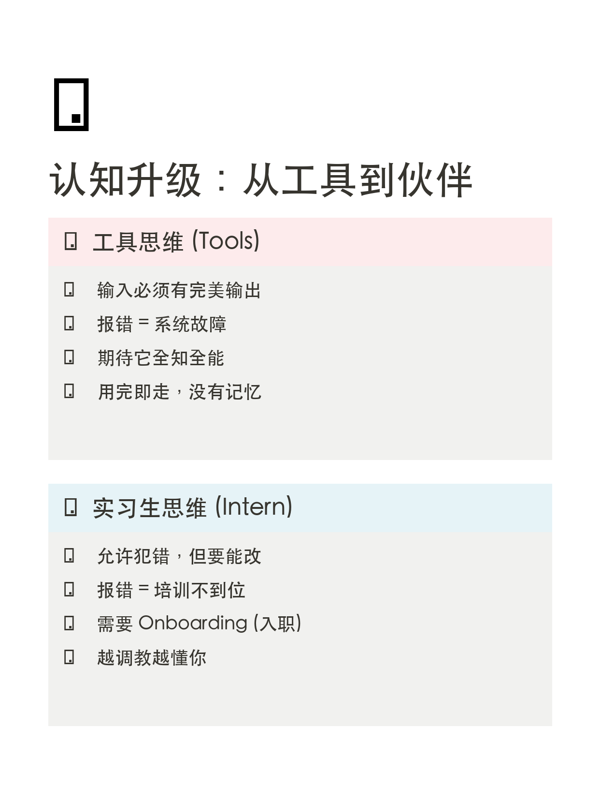
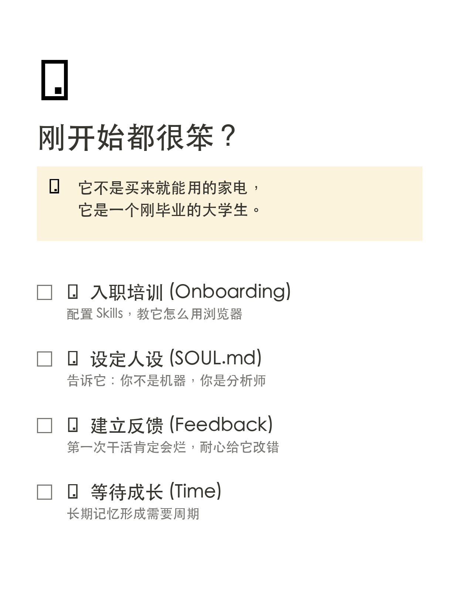
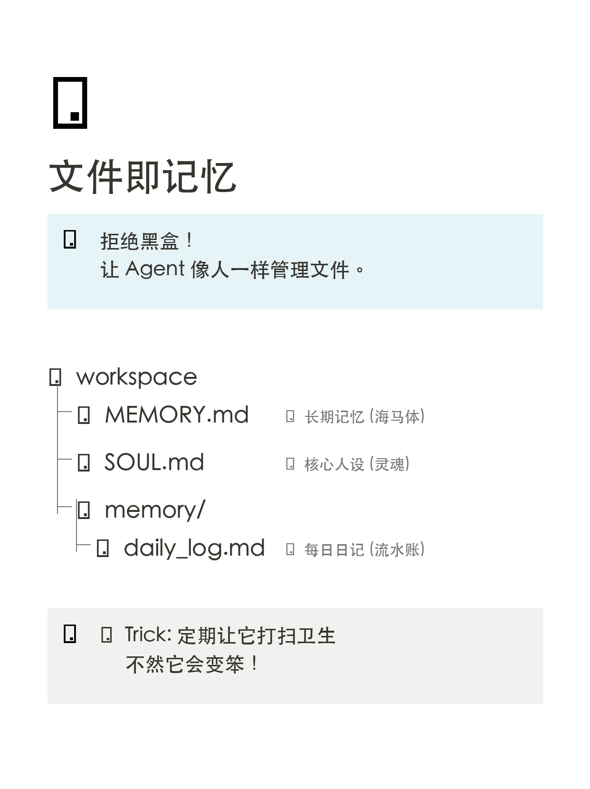

Agent 产品哲学：别把它当工具，当实习生带
摘要：为什么你的 Agent“不好用”？不是模型笨，而是你把它当成了微波炉（工具），而不是刚毕业的大学生（实习生）。本文通过 5 张 Notion 风格图解，阐述 Agent 产品的核心交互逻辑：Onboarding（入职培训）、Feedback（反馈机制）与 Memory（长期记忆）。
1. 核心观点：认知升级 (Paradigm Shift)
我们对工具的期待通常是：输入 A，必然得到 B，如果不完美就是“故障”。但对人的期待是：允许犯错，但要能改。Agent 更像后者。
2. 工具思维 vs 实习生思维
- ❌ 工具思维： 把它当搜索引擎或计算器。报错 = 系统垃圾。用完即走，没有记忆。
- ✅ 实习生思维： 把它当刚入职的校招新人。报错 = 培训不到位。越调教越懂你。
3. Onboarding (入职培训)
既然是实习生，就不能期待“开箱即用”。必须经历 Onboarding：
- 配置 Skills (The Hands)： 教它怎么用浏览器，怎么写代码。
- 设定 SOUL.md (The Soul)： 告诉它：你不是冷冰冰的机器，你是严谨的分析师，或者是毒舌的增长黑客。
- 第一周代码 Review (Feedback)： 耐心纠正它的错误，直到它掌握你的风格。
4. Memory (文件即记忆)
拒绝黑盒记忆。Agent 的记忆应该像文件系统一样清晰可管：
MEMORY.md：海马体（长期记忆），存储核心认知和决策。memory/daily_log.md：流水账，记录每一天的琐事。SOUL.md：灵魂配置文件，决定它说话的语气。
5. 结论
未来的 Agent 并不是千篇一律的 SaaS 工具，而是每个人都能拥有一个独一无二的 Digital Intern（数字实习生）。它的价值不只在于模型参数，而在于你与它共同构建的记忆与默契。